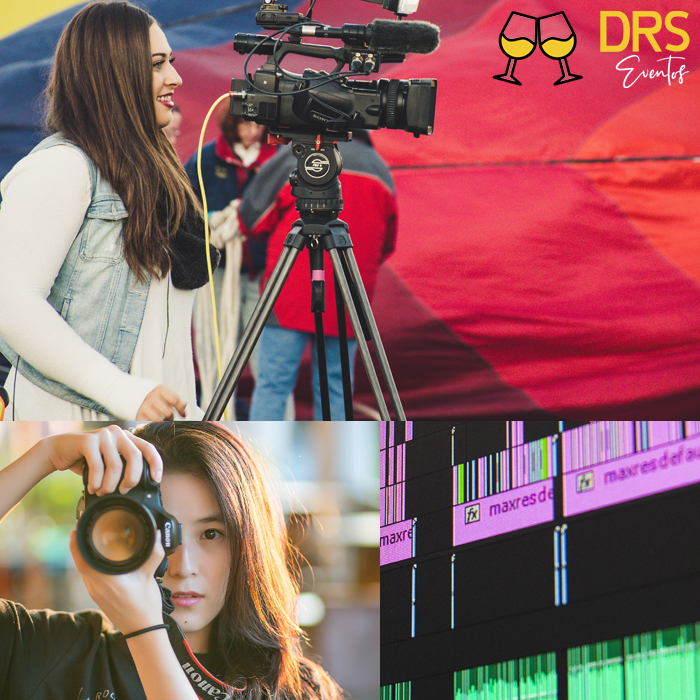
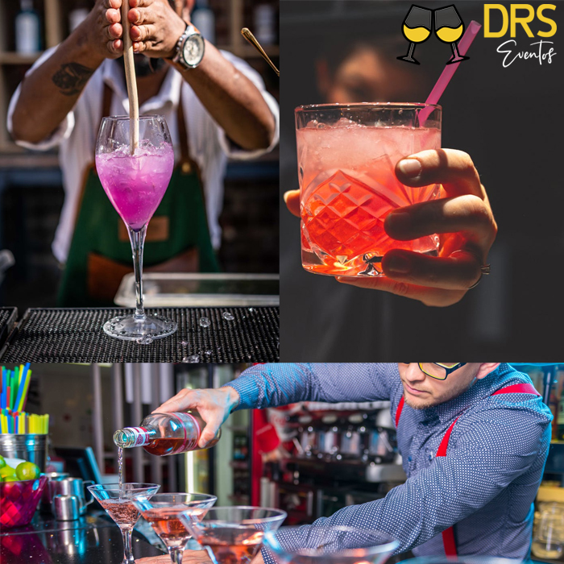
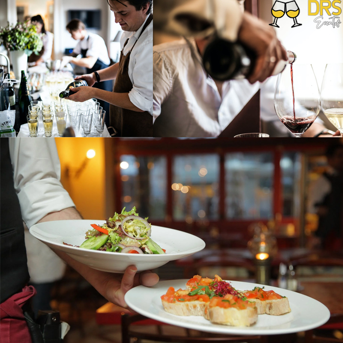

Equipe de Vídeo e Fotografia
Membros da equipe
- João Costa - Fotográfo formado em Páris
João começou a se interessar por fotografia logo cedo, quando comprou seu primeiro celular flip com câmera. As fotos na pequena câmera de 2MP já faziam a sua felicidade, dia após dia. Como em um filme, onde o fotógrafo tira fotos de tudo, assim era o jovem João. Com o passar do tempo, ele desenvolveu suas habilidades, chegando a trabalhar até em grandes revistas, fomando-se na Academia de Fotografias Parisiense, fornecendo fotos para o "The New York Times", "Forbes", entre outras grandes marcas. À procura de novos desafios, João procurou a DRS Eventos, que ficou feliz em recebê-lo. Unindo seu talento ao da equipe, constitui uma peça importantíssima para o grupo de fotografias da DRS Eventos.
- Lucca Dias - Cinegrafista formado em Viena
Lucca desde cedo sempre foi apaixonado por cinema. Quando tinha 8 anos de idade, já criava pequenos curtas com seu telefone celular. Já na adolescência, ganhou um prêmio amador de cinema ao recriar, em 20 minutos, a história do filme "A vida é bela". Os jurados elogiaram com veemência seu trabalho, e o pediram que seguisse em frente. Até que, aos 18 anos de idade, venceu um concurso de direção. O prêmio? Um curso superior GRATUITO de cinema na Academia de Artes de Viena. Lucca foi responsável pelo desenvolvimento das histórias de filmes como "O irlandês", de Martin Scorcese.
- Helio Rodrigues - Editor formado pelo Gaveta
Helio sempre se interessou pelos vídeos do Gaveta. Quando tinha 15 anos, vencedu um concurso de redação e teve sua matéria publicada no jornal "A Tribuna". Sempre muito divertido, realista e satírico, chegaram a comparar os contos e crônicas de Helio aos de Nelson Rodgrigues, quando este ainda tinha 20 anos de idade. Após alguns anos e dois pulitzers, Helio decidiu relaxar e aproveitar um pouco mais a sua família. Aprendeu a magia da edição de vídeos, e formou-se no Gaveta, feito que sempre sonhou, tornando-se um grande editor. Atualmente, além dos vídeos da DRS Eventos, também edita para alguns canais da internet, como o canal "Pewdiepie".
Equipe de Bar & Drinks
Membros da equipe
- João Costa - Bartender especializado em bebidas não alcoólicas
João começou a se interessar por sucos logo cedo quando comprou seu primeiro Phillips Juicer Wallita (direitos reservados). Sempre muito ativo e diligente, estudou os melhores métodos de fazer sucos, até que chegou a um ponto interessante em sua carreira. Descobriu a maravilha das bebidas não alcoólicas. Após a morte do pai ter sido atribuída à cirrose, João jurou não tocar mais em nenhuma gota de álcool pelo resto de sua vida. Depois de mais de 400 horas de certificação em cursos de bartender e drikns alcoólicos sem álcool, João foi alegremente contratado pela DRS Eventos, onde lidera com primor sua equipe.
- Lucca Dias - Bartender especializado em bebidas alcoólicas
Lucca desde cedo sempre foi apaixonado por alcoól. Quando tinha 8 anos de idade, prometeu que aguardaria 10 anos para tomar algo pela primeira vez, haja vista que sua família, apesar de dona de parte das ações da Budweiser, sempre foi muito rígida quando o assunto era consumir álcool de maneira inadequada. Aos 18 anos, apesar de nunca ter bebido, Lucca já era expert em todos os tipos de bebida alcoólica. Formou-se em Química pela Universidade Federal de São Paulo, e especializou-se em produção e aprimoramento de bebidas alcoólicas. Atualmente, Lucca é o chefe da equipe de bebidas alcoólicas da DRS Eventos, e mesmo apesar das 100 horas de certificação, possui um drink EXCLUSIVO patenteado pela DRS: o Blind Guardian.
- Helio Rodrigues - Bartender especializado em refrigerante
Helio sempre se interessou pelos por refrigerantes, bebidas práticas que já vinham prontas. Quando tinha 15 anos, o pequeno Helio conheceu de perto uma fábrica de refrigerantes da Coca-cola (Direitos reservados), pois seu pai trabalhava lá. Aos 18 anos, Helio ingressava na Universidade de Oxford, e após se formar em Engenharia Química, auxiliou empresas brasileiras na produção de refrigerantes com sabor único e grande qualidade. Auxiliou na produção do "Guaraná Jesus", famosíssimo na região Nordeste do Brasil, além da conhecida "Itubaina" da região sudeste. Atualmente trabalha como chefe da equipe de produção e distribuição de refrigerantes da DRS Eventos, coordenando os bartenders e a qualidade dos refrigerantes por eles servidos.
Equipe de Cozinha & Buffet

Membros da equipe
- João Costa - Chef formado em Páris especializado em Gourmet
João começou a se interessar por culinária logo cedo quando comprou seu primeiro NDS e jogou Fast food Panic, joguinho onde se produz comida o mais rápido possível, e com o máximo de requinte. João adorava (e ainda ama) séries como "Hell's Kitchen" e "Masterchef". Aliás, foi ao próprio Gordon Ramsay que pediu tutela, e após se formar em gastronomia na renomadíssima Le Cordon Bleu, tornando-se um dos maiores, se não o maior cozinheiro do mundo. João atualmente trabalha com muito orgulho na DRS Eventos, onde se especializa em todo tipo de massa e proteína, além de coordenar saladas, complementos e sobremesas.
- Lucca Dias - Chef formado em Viena especializado em comida Latina
Lucca desde cedo sempre foi apaixonado por Tacos. Quando tinha 8 anos de idade, Lucca aprendeu a fazer a sua primeira tortilla enquanto assistia um programa de culinária mexicana. Lucca começou a aprender as mais variadas formas de comida latina, desde o açaí tradicional da região Norte do Brasil, até o famoso chimarrão da região Sul, além de outros pratos mexicanos, da guiana francesa, bolivianos, argentinos, entre outros inúmeros países. Atualmente, quando o cliente pede comida típica de algum país da América Latina, não há nada que o Lucca da DRS Eventos não possa fazer.
- Helio Rodrigues - Chef especializado em Ramen e Sushi
Helio sempre se interessou por comida rápida. Quando tinha 15 anos, Helio aprendeu, por meio de um vídeo do YouTube, como fazer o famoso "Fugu", prato raríssimo feito com cortes de baiacu, peixe altamente venenoso (É necessária uma formação para que se possa realizar esse tipo de corte, a qual Helio adquiriu aos 20 anos). Todos os clientes que solicitam algum tipo de comida asiática ficam maravilhados com tamanha habilidade, respeito e categoria apresentados pelo Chef Helio, que entende tudo de sushi, sashimi, macarrão tipo Lámen, Arroz "Gohan", entre vários outros pratos japoneses e chineses.
Equipe de Garçons
Membros da equipe
- João Costa - Líder da equipe de Garçons principais
João começou a se interessar por liderança logo cedo quando comprou seu primeiro cachorro poodle. João adorava ensinar ao cachorro como agir de maneira correta e obedecê-lo. Sempre muitíssimo requintado, o nosso homem de etiqueta fez vários cursos de educação alimentar e educação à mesa em Londres, e aos 21 anos começou no emprego de garçom em pubs e pequenos bares da região. Após certo tempo, frequentando restaurantes requintados e com currículo vasto, extenso e de muito prestígio, João volta para o Brasil, com o fim de trabalhar na maior empresa de eventos do mercado. Assim como você, cliente, ele veio pra DRS Eventos.
- Lucca Dias - Líder da equipe de Garçons acrobatas
Lucca desde cedo sempre foi apaixonado por acrobacia. Quando tinha 8 anos de idade, o pequeno Lucca já aprendia suas primeiras piruetas e saltos, acompanhando vídeos de grandes ginastas, como Diego Hypólito e Daiane dos Santos. Com 16 anos, disputou sua primeira competição mundial de ginástica artística, da qual foi medalha de prata. Após alguns campeonatos, abandonou o ramo competitivo, entrando para o Cirque du Soleil. Hoje em dia, Lucca lidera a equipe de garçons acrobatas da DRS Eventos com muita graça, emoção, alegria, e acima de tudo, dedicação.
- Helio Rodrigues - Líder da equipe de Garçons Self-Service
Helio sempre se interessou por não fazer as coisas pelos outros. Quando tinha 15 anos, criou um pequeno restaurante self-service na cozinha de sua casa, para que as próprias pessoas que moravam em sua residência fossem responsáveis por sua própria refeição. Afinal de contas, não há como não ficar satisfeito quando é você mesmo que está se servindo, certo? Após vários negócios de sucesso no ramo de self-service, incluindo a criação do inovador "self drive-through", Helio decidiu investir na carreira de eventos, sendo o mais novo parceiro da DRS, servindo, ou melhor, fazendo as pessoas se servirem com o máximo de primor.
Equipe de Música e Ambientação musical

Membros da equipe
- João Costa - Saxofonista formado em Berklee
João começou a se interessar por Saxofone logo cedo quando comprou seu primeiro álbum do artista Kenny G. Mal sabia ele o que o destino o havia reservado. Aos 17 anos, João, já habilidoso saxofonista, encontrou o próprio Kenny G em uma turnê, onde passava pelo Brasil. O artista viu muita promessa em João, e convidou-o para ser seu aprendiz. Após aprender com Kenny G, procurou um certificado verdadeiro em música, e como se não bastasse o currículo, formou-se na escola de música Berklee. João é o mais experiente saxofonista que há, e só podia ser colaborador da DRS Eventos!
- Lucca Dias - Vocalista e Violonista formado no Conservatório Heitor Villa Lobos
Lucca desde cedo sempre foi apaixonado por música. Quando tinha 8 anos de idade, Lucca ganhou seu primeiro violão elétrico, e o garoto tinha dom. Após 5 anos tocando, apresentou seu primeiro show no teatro de sua escola, e um olheiro do Conservatório Heitor Villa Lobos chamou seus pais, e os convidou para conhecer o local. O menino ganhou uma bolsa integral, e após alguns anos, formou-se nos cursos de canto e de violão, tornando-se o mais jovem graduado do Conservatório. Após o feito, a jovem promessa recebeu contato imediato dos melhores e mais variados antros de música do país. Lucca escolheu a DRS Eventos por conta de sua amizade com João, Saxofonista, e para dar um grande início à sua carreira.
- Helio Rodrigues - Líder dos DJs professor do Alok
Helio sempre se interessou por não tocar necessariamente instrumentos musicais. Quando tinha 15 anos, ispirados pelas pickups dos MCs americanos e brasileiros, comprou a sua primeira mesa de edição de som. 5 anos depois, o jovem já era um dos DJs mais conhecidos do mundo, responsável por auxiliar na criação da batida e ritmo de músicas como "Let's Get It Started", da famosa banda Black Eyed Peas, e também deu aulas a um jovem DJ brasileiro que conheceu, que mais tarde tornar-se-ia o mundialmente famoso Alok. Atualmente, Helio concentra-se em aproveitar seu tempo com sua família, e é líder da equipe de DJs da DRS Eventos. Esse aí solta o som mesmo!